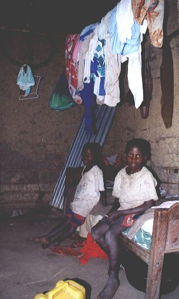
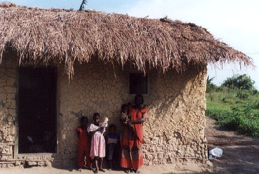
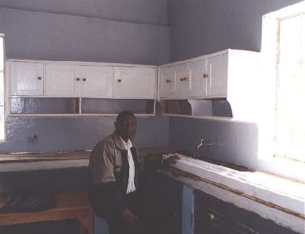
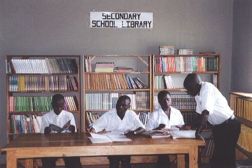
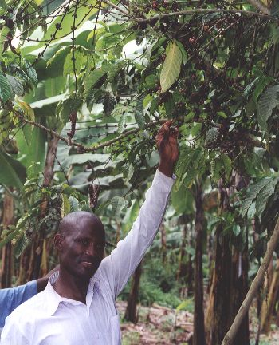
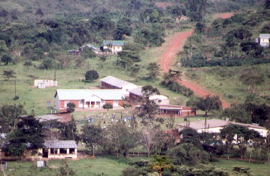
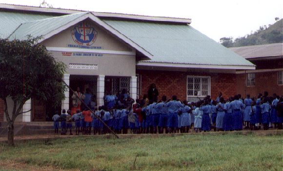
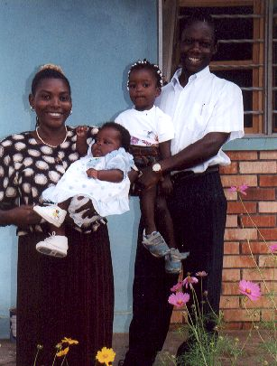

Oktober 2001
Bram Moolenaar, penningmeester van ICCF Holland, bezocht het Kibaale Children's Centre in oktober 2001. Dit zijn fotos die toen gemaakt zijn.
|

|
Daniel Lugambwa en zijn broer in het huis waar ze wonen. De muren zijn van
takken en klei. Het dak is van stalen golfplaten (een beetje verroest).
|

|
De buitenkant van hetzelfde huis. De grootmoeder zorgt voor tien kinderen. Ze
hebben een goede tuin waar ze bananen and jackfruit verbouwen. Ze hebben een
paar geiten en kippen.
|
|

|
Het huis waar Nabasagi Morine woont met drie andere kinderen. Deze heeft een
traditioneel dak van riet (dat lekt als het hard regent). Ze proberen geld te
sparen om een beter huis te bouwen. Dat lijkt niet erg te vlotten, het ziet er
nog hetzelfde uit als bij mijn vorige bezoek.
|

|
Weer een drukke dag in de kliniek. Patienten wachten op hun beurt om de
verpleegster te spreken, medicijnen af te halen of een injectie te krijgen. Op
een drukke dag zijn er meer als honderd patienten.
|
|

|
Het nieuwe laboratorium bij de kliniek, bijna klaar om in gebruik te nemen. De
man is de technicus die de testen zal gaan doen.
|

|
Potten met medicijnen, klaar om geteld te worden en aan patienten te geven.
Hier gaat een groot deel van de uitgaven van de kliniek aan op.
|
|

|
Studenten gebruiken de boeken in de bibliotheek. Het is open van 'smorgens
vroeg tot negen uur 'savonds.
|
|

|
Cephas laat een koffiestruik zien. Dit vormt een inkomen wanneer de
koffieprijzen goed zijn. Helaas zijn de prijzen dit jaar erg laag. Cephas is
een van de mannen die de kinderen opzoeken en bepaaldt of ze extra hulp nodig
hebben.
|
|

|
Vanaf de heuvels rondom het project kan je een goed overzicht krijgen van het
centrum. Het opvallende gebouw in het midden is het nieuwe kantoorgebouw van
de lagere school. Rechts ervan de klaslokalen. In de achtergrond staan huizen
voor de leraren. In de voorgrond links de school voor vakopleidingen. Rechts,
achter de bomen, het grote gebouw waar ook de kliniek in zit.
|
|

|
Acht uur 'sochtens: De kinderen verzamelen voor de school om het volkslied en
het schoollied te zingen. Laatkomers rennen om nog op tijd te zijn.
|
|

|
Patrick en Ellen werken al lange tijd voor het centrum. Patrick leidt de
bouwactiviteiten en doet de boekhouding. Ellen is lerares. Ze zijn drie jaar
terug getrouwd en hebben nu twee beeldschone dochters.
|

|
De Canadese vrijwilligers die momenteel op KCC werken. Jackie, links, is de
directeur van het hele project. Stephanie en Rebecca helpen met de
administratie van het sponsorprogramma. Gwen leidt de bibliotheek en het
leraren ondersteunings centrum. Paul is het directeur van de school.
|
bezoek verslag
top
|